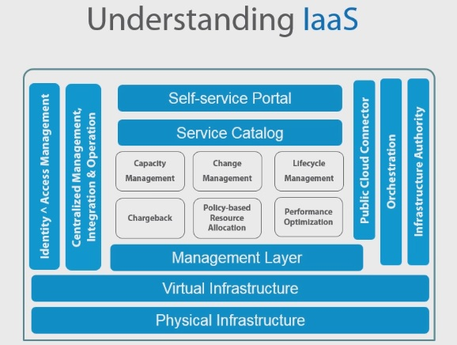

- + -
AMIs
- Amazon Machine Images
- + -
EC
- Elastic Computing
- + -
S3
- Simple Storage Service
- Object Based Storage
- + -
EBS
- Elastic Block Storage
- + -
EC2
- Elastic Compute Cloud
- + -
ECU
- EC2 Compute Unit
- Measure of EC2 Processor Unit
- Deprecated by still used
- + -
vCPU
- Virtual CPU
- + -
IAM
- Identity Access Management
- Can create users, groups, policies, permissions, object & access ACLs
- + -
ELB
- Elastic Load Balancer
- + -
Route 53
- DNS
- 100% Uptime
- + -
RI
- Reserved Instances
- + -
VPC
- Virtual Private Cloud
- + -
CG
- Customer Gateway
- + -
VPG
- Virtual Private Gateway
- + -
IGW
- Internet Gateway
- + -
ELB
- Elastic Load Balancing
- + -
SNS
- Simple Notification Service
- + -
SES
- Simple Email Service
- + -
SQS
- Simple Queue Service
- + -
RDS
- Relational Database Services
- + -
What is AWS?
- Infrastructure Service For the World
- Elastic Computing
- Stroage in the cloud
- Security & Compliance
- Pricing & Availability
- + -
AWS Certifications
- Architect
- Developer
- SysOps
- + -
Cloud Computing
- Automation of Highly Virtualized Environment
- + -
Essential Characteristics
- On-Demand
- Resource Pooling
- Broad Network Access
- Rapid Elasticity
- Measured Services
- + -
Service Models
- + -
Infrastructure As A Service (IAAS)
- Abstracts all the hardware
- + -
Platform As A Service (Paas)
- Allows developers develop application against a platform
- Application is a ware of the infrastructure
- + -
Software As A Service (SaaS)
- Similar to Basecamp, Things we can consume
- Can be used to build additional services
- + -
Infrastructure As A Service (IAAS)
- + -
Deployment Models
- + -
Private
- On-Premise
- + -
Private Cloud in the Public cloud
- Logical seperation
- + -
Hybrid
- Extend on-premise private cloud to the public cloud
- Elastic expansion of private infrastructure to complement the private cloud
- + -
Community
- Vertical Cloud
- Example: Govt. Cloud to comply with Govt. Regulations for Govt. data/infra
- Example: Health Cloud to comply with HEPA and other regualatory compliances
- Vertical Cloud
- + -
Public
- Example: AWS
- + -
Private
- + -
Key Dates in Cloud Computing History
- + -
July 2002
- + -
AWS Launch
- Not the current form of AWS
- Used internally
- + -
AWS Launch
- + -
March 2006
- + -
S3 Launch
- Ability to consume storage
- Price Model of Pay as you Go lauched
- Available for external consumers
- + -
S3 Launch
- + -
August 2006
- + -
EC2
- Allowed VM like instances in Amazon
- + -
EC2
- + -
April 2008
- + -
Google App Engine Launch
- Entry of Google (A Tech Company) into this space validating the tech Amazon built
- A Platform as Service
- + -
Google App Engine Launch
- + -
November 2009
- Azure Beta Lauch
- Microsoft Enters the Market
- + -
July 2002
- + -
Cloud Service Providers
- Refer Gartner Magic Quadrant for Cloud Service Providers
- Move from 'Build and Operate' to 'Consume'
- + -
AWS History
+ - Jeff Bezose
- Founder of Amazon
AWS born in 2002
EC2 developed first and foremost for Amazon's internal infrastructure
AWS was developed to fulfull an internal need to be able to scale out Amazon's infrastructure worldwide and give developers access to this infrastructure centrally.
Jeff Bezos introduces EC2 and S2 at MIT's emerging Tech Conferenace
Quote: There's a hidden Amazon, just under the epidermis, the guts of Amazon, this is all the stuff we have to do on the back-end to make this work - Jeff Bezos
EC2 created by Chris Pinkham - Amazon VP Engineering
Offered at Low Margin to discourage competition
Quote: From experience we know the cost of maintaining a reliable, scalable infrastructure in a traditional multi-data center model could be as high as 70 percent, both in time and effor, and requires significant investment of intellectual capital to sustain over a long period of time - Werner Vogels - Amazon CTO
- + -
On-Premises Components
- + -
Individual Components
- Security
- Cooling
- Connectivity
- Network Hardware
- Servers
- Cabling
- Storage
- Facilities
- Expertise on all of the above
- + -
Understanding IaaS
- 
- Built by automation of repeatable processes
- + -
Individual Components
- + -
DIY Vs. AWS
- DIY
- + -
Scale UP
- Need 100 today, buy 200. Need only 50 tomorrow, still stuck with 200.
- Assume reliable infrastructure
- + -
Diverse Technical Expertise
- Tech expertise needed for H/W, Netorking, Virtualization,etc.
- Application unaware of infrastructure
- High Upfront Cost
- Design, build, operate, support
- + -
Scale UP
- AWS
- + -
Elastic Service
- Need 100 today, get 100. Need 50 tomorrow, reduce to 50.
- Expect infrastructure to fail
- + -
Expertise focused on application
- Focus on the abstract simplified infrastructure provisioning application
- Application aware infrastructure
- Usage-based costs
- Limited Knowledge/Shared support
- + -
Elastic Service
- DIY
- + -
What is Elastic Computing?
- The ability to instantly expand or contract your capacity without incurring upfront OPEX cost.
- + -
Region & Availabilty Zones
- Region = Geographical Area specified by Amazon
- 17 Regions + Gov Cloud (As of 8-1-2018)
- Availability Zone = Data center within a region that Amazon has
- + -
Depending on Region/Availability Zone, certain services may/maynot be available
- Type of services required may dictate where the resources are placed.
- + -
Edge Location
- Edge locations are services that Amazon offer which are complimentary.
- Cannot place resources
- Can consume services at edge locations
- + -
Example: Amazon Route 53 DNS
- SLA of 100%
- Region = Geographical Area specified by Amazon
There is no way any individual consumer organization could build security measures that cloud providers like AWS have built in, due to resource, scale and automation.
+ - Physical Access
- Location is Secret
- Controlled Physical Access
- Best in class datacenter security
- Video Surveillance
- + -
Server and Network Infrastructure
- Hardware refresh cycle to avoid component failure
- Properly decommissioned storage
- Always on Monitoring System
- + -
Security Certifications & Compliance
- HIPPA
- SOC1/SOC2/SOC3
- PCI DSS Level 1
- ISO 27001
- FedRAMP(SM)
- DIACAP and FISMA
- ITAR
- FIPS 140-2
- CSA
- MPAA
- Lot, lot, lot more...
- https://aws.amazon.com/compliance/
+ - Shared Security Responsibility
- Responsibility for security is shared between client (US) and aws
- + -
AWS Security Responsibilities
- Virtual Host Security
- Storage Security
- Network Security
- Data Center Security
- Database Security
- + -
Our Security Responsibility
- AWS Account Security (MFA, API)
- Operating System
- Database
- Applications
- Data Encryption
- Authentication
- Network Integrity
- + -
Security Methods and Connectivity
- How does Amazon secure stuff and tools provided to secure stuff?
- + -
Security Groups
- Ability to specifiy which component have acess to which component
- + -
Virtual Private Cloud (VPC)
- AKA Virtual Networking
- Have access list
- + -
Direct Connect
Other Data Centers (Not owned by Amazon), aka Direct Connect Data Centers, have Gigabit connectivity to Amazon Cloud
Equipments (NAS, AS400, etc) can be placed in these Data Center, to have Gigabit connection to Amazon cloud
- + -
Import/Export
A service offered by Amazon which allows you send storage media/array to them and have the data imported/exported in a specific format to/from your Amazon storage, securely.
- + -
VPN Access
- Allows to extend on-premise network to Amazon cloud
- + -
Dedicated Server
Can be used for a price, to host applications/data which has regulatory requirement to host it on a stand alone server
+ - Identity and Access Management (IAM)
- Slue of control that AWS give you.
- + -
User and Service Management
- Very high levels of delegation
- Control access to AWS resouces
- Multi-Factor Authentication
- API Access
- + -
Understanding Ephemeral Storage
- AKA Instance Store
- Temporary Block-Level Storage - Hosted on the same server that is presenting the EC2 intance
- Only Free Storage with an EC2 Instance
- + -
Data is list when instance is terminated or stopped
- Not when it is rebooted
- The volume is attached and cannot be seperated from the EC2 instance
- There is no SLA, access speed is not guaranteed
- Buffers, caches, scratch data, etc.
- Replicated data fro load-balanced web server
- + -
Amazon Simple Storage Service (S3)
- + -
Intro
- First AWS service introduced in 2006
- Internet accessible storage via HTTP/HTTPS
- Audio,Video,Image,Backup,etc...
- Unlimited bucket size
- Up to 5TB object size
- Priced on storage used and transfer out
- + -
It's not a file system
- Cannot map as a drive
- 99.99% SLA Uptime
- + -
Two Types of S3 Storage
- + -
Standard Storage
- 99.999999999% durability
- + -
First 50TB $0.023 /GB
- Varies by region
- + -
Reduced Redundancy Storage (RRS)
- ??????????????
- First 1TB $0.024/GB ??
- Price seems to be higher than Standard storage
- Reduced durability - 99.99%
- + -
Standard Storage
- + -
Intro
- + -
Understanding Elastic Block Storage - EBS
- Not internet accessible
- Persistent file system for EC2
- Does not need to be attached to an instance
- Can be transferred between Availability Zones
- Supports incremental snapshots
- EBS leverage S3 for snapshot storage
- Provisioned IOPS
- + -
Understanding Glacier
- Very cheap storage
- Userful for infrequently used data. Ideal of backup.
- Very, very slow retrieval times (4-6 hours)
- High Durability
- Cost for restore
- AED 256 bit data encryption
- $0.004 per GB /month
- + -
Elastic Compute Cloud (EC2)
- Pay-Per-Use, scalable platform for VMs
- Supports Windows and Linux Instances
- Based on Amazon Machine Image (AMI) refers to virtual disk template (Ex. OVA, OVF)
- You can import/export your own AMIs
- You can provision AMIs from Amazon Market Place
- + -
EC2 Compute Unit (ECU)
- Amazon has moved away from this to vCPU
- A relative measure of processing power
- Abstracts CPU hardware changes
- One ECU is equivalent to 1.0 - 1.2 Ghz 2007 Intel Opteron or 2007 Xeon
- Consistent amount of CPU capacity regardless of hardware
- Each intance type may be based on different physical processors
- Manage consistency through benchmarks and tests
- + -
EC2 Instance Type
- + -
Micro Instances
- Instance with very low resources
- + -
General Purpose
- Good balance of all resources including CPU, Memory, Diskspace, etc
- + -
Compute Optimized
- Gives preference to vCPU
- Specifically designed for workloads that are CPU intensive
- + -
GPU Intances
- Video/Image rendering
- 3D Stuff
- Heavy compute that knows how to take advantage of GPUs
- + -
Memory Optimized
- Workload that are memory intensive
- + -
Storage Optimized
- For workload that requires intensive storage
- + -
Micro Instances
- + -
On-Demand Instances
- The default type
- The most expensive option
- No Commitment
- Price vary by AWS Region
- Billed on an hourly basis
- + -
Reserved Instances (RI)
- Less expensive
- Required a commitment (1 or 3 years)
- Has an upfront cost
- Lower Hourly rate
- RI can be sold on the AWS marketplace
- You commit to utilization
- + -
Levels of RI based on Utlilization
- + -
Light Utilization RIs
- Ideal for couple of hrs/day or couple days/week
- + -
Medium Utilization RIs
- Ideal for couple of hrs/day or couple days/weeks
- + -
Heavy Utilization RIs
- Commiting to running 100%
- Highest Saving
- + -
Light Utilization RIs
- Check www.ec2instances.info
- + -
Spot Instances
- Unused AWS Capacity
- Very Cheap Hourly Rate
- + -
Not guaranteed
- Can be kicked out of an instance due to a lower bid
- Based on bid
- Ideal for raw processing power, grid-like applications
- Highly Scriptable
- + -
Along with EC2 pricing must factor in:
- Storage Pricing EBS
- Transfer Pricing
- https://calculator.s3.amazonaws.com/index.html
- + -
Virtual Private Cloud (VPC)
- Logically isolated network in the AWS cloud
- Gives control of network architecture
- + -
Enhanced security
- Ingress and Egress Security
- Internetwork with other organization
- + -
Elastic IP Address (public IPs)
- First Elastic IP Address with the instance is free
- Enable hybrid cloud (site-to-site VPN)
- VPC Cost = $0
- VPN cost is $0.05/hr
- + -
AWS Reference Model
-
- + -
VPC Access
- + -
Gateway
- + -
Internet Gateway (IGW)
- Virtual Device that allow Ingress & Egress traffic to the internet
- + -
Virtual Private Gateway (VPG)
- AWS side of secure VPN
- + -
Customer Gateway (CG)
- Customer side (device) of secure VPN
- + -
Internet Gateway (IGW)
- + -
VPN
- + -
Direct Connect
- When VPN connection is not enough
- Dedicated and isolated
- No Internet
- HA connectivity supported
- Like MPLS
- + -
Hardware based VPN
- On-Premise to AWS over internet
- HA connectivity is support
- 3rd party brands supported
- + -
Direct Connect
- + -
Gateway
- + -
VPC Network Security
- VPC is region-wide
- Subnets are Avaialability specific
- All subnets can route to each other by default
- Some resources will get Elastic IP Addresses, other will get only subnet addresses
- + -
Security Groups
- + -
Resource level traffic firewall
- Resource = instance, ELB, etc.
- Ingress and Egress
- + -
Stateful
- Return traffic allowed
- + -
Resource level traffic firewall
- + -
Access Control Lists
- Source and Protocol fitering
- + -
Subnet level traffic firewall
- Separate inbound and outbound rule set
- + -
Stateless
- Traffic stictly fitered
- + -
VPC Peering
- Allow connection between 2 VPCs
- No Overlapping network addresses are allowed
- No transitive peering allowed
- Inter-VPC routing is available
- Same or different AWS account
- + -
Elastic Load Balancing (ELB)
- Region Wide Load Balancers
- Can be used internally or externally
- + -
SSL Termination and Processing
- Allow SSL certificate to be used in the Loadbalancer to serve all destination hosts
- Example: Multiple Webserver served by single SSL on Loadbalancer
- + -
ELB EC2 health check
Capable of doing health check for destination hosts
Example: If ELB sending traffic to multiple webserver, one of the webserver is failing, that server will be removed from the pool
- Route 53 will also performs health checks against ELB
- ELB is region based
- + -
Amazon Route 53
- DNS is crutial for any environment
- Worldwide Distributed DNS
- More DNS presence than any other provider
- Route 53 has 100% SLA uptime
- Route 53 has an API
- + -
Server Health Checks
- Health check of public facing Servers
- + -
AWS CloudWatch
- AWS Monitoring for systems & billing
- Basic Monitoring (7 metrics, 5 Minutes)
- Detailed monitoring (10 alarms, 1 million API requests, 1 min)
- Set alarms and alerts
- Notifications via Simple Email Service (SES), Simple Notification Services(SNS)
- Custom Monitoring through API
- Integrates with Autoscaling
- Mobile app for basic monitoring and management
- + -
Autoscaling
Autoscaling provides the capability to expand or shrink your EC2 instance on demand
Integration with Cloudwatch allows autoscaling to expand or shrink instances based on preset alarm/criteria on Cloudwatch
Controls by CloudWatch or Manual schedule configuration
Notifications are available
It's Free

- + -
Amazon Database Options
- + -
Options
- RDS
- Non-RDS
- + -
In-Memory
- Elasti-Cache
- + -
Data Warehousing
- Red-Shift
- + -
Custom
- Install OS and DB
- + -
RDS Options
- Traditonal DB
- MySQL
- Oracle
- Microsoft SQL
- PostgreSQL
- Aurora
- + -
Non-RDS Options
- Flat file system
- + -
SimpleDB
- High Available, Very scalable Managed DB service
- Good for DB that won't grow beyond 10GB
- + -
DynamoDB
- Very Fast, Very scalable Managed DB service
- Based on NoSQL/NonSQL
- Very fast to query and index
- + -
Mongo DB
- Supported in Custom
- + -
Couchbase
- Supported in Custom
- + -
Options
- + -
Amazon APIs
- + -
API is
- Application Programming Interface
- Application-to-Application Communication Method
- Almost every AWS service is API capable
- + -
API Wrappers
- Android/iOS/.Net/Java/PHP/Ruby/Node.js/Python
- Wrapper translates programming Language commands into AWS type of command
- API authentication
- + -
API is
- Amazon Lambda
- + -
Intro
- A compute service
- An event-driven compute service
- Runs code triggered by event
- Does not require an instance
- Does not require an infrastructure
- Rapid response to events
- Thousands of function can run in parallel
- Run only when needed
- + -
Use Cases
- + -
Thumbnail images as soon as an image arrive in an S3 bucket
- + -
Before Lambda
- Provision a fleet of proxy machines to capture uploads
- For each upload, enqeuer a job to process it
- Provision a second fleet of machines to read and process jobs
- Pick a deployment solution
- Plan capacity, accounting for FT, long-term utilization and burst capabilities
- Monitoring and patching
- Migration to new instance type over time
- + -
Before Lambda
- Check that every address stored in Amazon DynamoDB is well formed
- + -
Thumbnail images as soon as an image arrive in an S3 bucket
- + -
Event-Driven Compute
- Stateless, request-driven code called Lambda functions
- + -
Triggered by events:
- + -
examples of triggers
- Put in S3
- Write to a DynamoDB table
- Trasition in an EC2 instance
- Message in an SQS queue or Kinesis stream
- Any API call or resource transition
- Server-Free Backend
- Data Triggers
- IOT
- Stream Processing
- Indexing and Synchronization
- + -
examples of triggers
- Connective tissue for AWS services
- + -
Amazon Lambda Pricing
- $0.2 per 1 million requests
- 0.0000021 execution time in 100ms
- Memory 100 ms at 128MB
- + -
Free Tier
- 1 Million requests
- Upto 3.2 million seconds of execution
- + -
Intro
- + -
Simple Email Services (SES)
- Cost-effective bulk email service
- Cost based on number of emails sent
- Outbound-only email-sending service
- Leverages Amazon email reputation
- Initially limited to 10,000 emails/day
- + -
Simple Queue Service (SQS)
- Fast, reliable and scalable
- Unlimited messages and queue size
- Payload up to 256 KB
- Billed in chunks of 64KB payloads
- First 1 million requests are free
- $0.5 / million SQS requests
- + -
Simple Notification Service (SNS)
- Push messaging service
- HTTP/HTTPS
- Email-JSON
- SMS
- Amazon SQS Queues
- + -
CloudFront
- Global Content Delivery Network (CDN)
- Leverages all AWS edge locations
- Cache Static Content
- Proxy dynamic Information
- Works with AWS and non-AWS services
- + -
CloudFormation
- Automates AWS resource provisioning
- Free Service
- Deleteing the CloudFormatuon deletes all instances except data
- + -
Elastic Beanstalk
- More for developers
- Similar to CloudFormation
- NodeJS
- Ruby
- PHP
- Python
- IIS
- Tomcat
- + -
CloudTrail
- Record API Calls
- + -
Log file includes:
- Identity of API caller
- Time
- Source IP address
- Request Parameter
- Response elements returns
- etc...
- + -
Maintains history
- Management console
- SDKs
- Command line Tools
- other AWS services